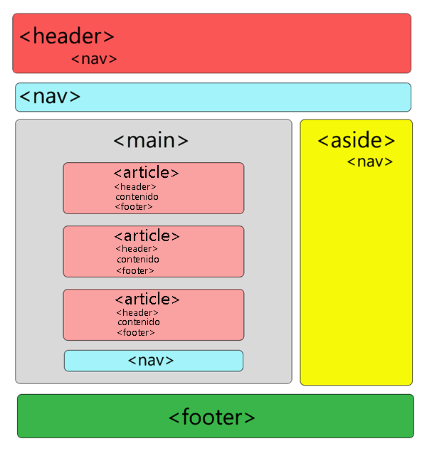

Etiquetas Basicas HTML
HTML es el lenguaje basico de la WEB, el cual estructura los sitios web, y se complementa con CSS para la apariencia y Javascript para el funcionamiento.
Se traduce como Lenguaje de etiquetas de hipertexto, referenta a que se conectan con enlaces entre si dentro de un mismo sitio o entre otros sitios Web.
En este se usan marcas para etiquetar texto, imagenes y otros contenidos para mostrarlos en un sitio Web, estas incluyen "elementos" especiales como:
Los elementos HTML se construyen con tres elementos generales para crear una etiqueta HTML.
- Etiqueta de apertura: indica el inicio de un elemento entre corchetes como por ejemplo una etiqueta h1 para crear un título.
- Contenido: que se encuentra entre las etiquetas de cierre y apertura y muestran lo que vera el usuario al cargar la página.
- Etiqueta de cierre: indica el final de un elemento con una barra inclinada delante del nombre del elemento como por ejemplo la etiqueta /h1 para finalizar el titulo.
Hay que añadir que dentro del contenido de una etiqueta HTML pueden haber otras etiquetas y asi consecutivamente según se requiera.
En este se usan marcas para etiquetar texto, imágenes y otros contenidos para mostrarlos en un sitio Web, estas incluyen "elementos" especiales como:
- Head: Se encuentra al inicio del documento HTML, contiene información general (metadatos) acerca de la página, además del título del documento, enlaces a scripts hojas de estilo entre otros.
- Title: Se ubica dentro de la etiqueta HEAD e indica el título de la página web, el cual es de carácter obligatorio.
- Body: Como su nombre indica contiene la parte del cuerpo del contenido de la página Web, esta etiqueta es esencial de todo documento HTML ya que señala el contenido visible de la misma.
- Div: ayuda para agrupar otros elementos y servir de plantilla para el contenido ayudando a estructurar la página en secciones.
- Header, footer, article, section, aside: Sirve de ayuda para organizar el contenido dentro del cuerpo de la página web como indican sus nombres para encabezado, secciones, áreas complementarias, artículos y pies de página, todas estas funcionan igual que una etiqueta div.
- P:Agrupa el texto dentro de un párrafo, ayuda a organizar el texto para hacerlo más fácil de leer.
- Span: Personaliza el estilo de una sola parte del texto.
- Img: permite mostrar imágenes dentro del contenido de la página indicando la ruta en la que se encuentra alojada la imagen.
- a: Ayuda a crear enlaces a otras páginas web, con un atributo que define la ruta del enlace a vincular.
- nav: representa el área dondese encontraran los enlaces o el menú de navegación de la página ya sea a secciones de la misma como a otras paginas, funciona como los div.
- ul ol li: Permiten crear listas, que pueden ser ordenadas OL o sin orden UL, conteniendo los elementos de la lista dentro de etiquetas LI.
Estructura basica de pagina HTML
Referencias
Developer.mozilla.org. 2022. HTML: Lenguaje de etiquetas de hipertexto | MDN. [online] Disponible en: https://developer.mozilla.org/es/docs/Web/HTML [Consultado 15 Marzo 2022].
Idevik, X., 2022. ¿Qué es una etiqueta HTML y cuáles son las más importantes? [online] Thinking for Innovation. Disponible en: https://www.iebschool.com/blog/que-es-etiqueta-html-analitica-usabilidad [Consultado 3 de Abril de 2022].